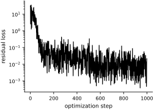
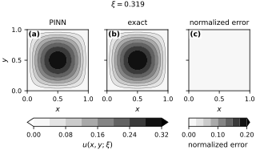

Solving Parametric Problems Using Physics-Informed Neural Networks#
For a single forward solve, an established numerical solver is usually the practical starting point. A parametric problem asks for the solution of an ODE or PDE at many parameter values. A parametric PINN shares the training effort across these repeated solves: it learns the map from parameters to solutions with one trained model. Whether that investment pays off depends on the accuracy needed and the number of subsequent evaluations.
The standard PINN approach extends to parametric problems by treating the parameters as additional inputs. Suppose that the parameters are \(\boldsymbol{\xi}\), an \(\mathbb{R}^d\)-valued random vector with density \(p(\boldsymbol{\xi})\). For each fixed \(\boldsymbol{\xi}\), the integrated squared residual depends on the trainable network parameters \(\theta\):
The idea is three-fold. First, enforce the boundary and initial conditions through the parameterization. Second, parameterize the unknown part using a neural network \(N(\mathbf{x}, \boldsymbol{\xi};\theta)\) with parameters \(\theta\). A good choice for the parameterization is this structure:
This is a good choice because it resembles an expansion in a basis of functions \(\phi_i(\mathbf{x};\theta)\) with coefficients \(b_i(\boldsymbol{\xi};\theta)\). The difference here is that the basis functions are learned—they are not fixed. Third, we find the parameters \(\theta\) by minimizing the residual loss averaged over the parameter distribution:
We can do this using Adam, or any other optimization algorithm. All we need is to express the loss as an expectation and construct an unbiased estimator of the gradient of the loss with respect to the parameters \(\theta\).
Example: Parametric Poisson Equation#
Let’s consider the following parametric Poisson equation:
where \(\Omega = [0,1]^2\). The source term is:
The exact solution to this problem is:
Direct substitution shows that \(\Delta u + f = 0\).
import sympy as sp
from sympy import symbols
x, y, xi = symbols('x y xi')
f = 2 * sp.pi ** 2 * xi * sp.sin(sp.pi * x) * sp.sin(sp.pi * y)
u = xi * sp.sin(sp.pi * x) * sp.sin(sp.pi * y)
res = sp.simplify(sp.diff(u, x, x) + sp.diff(u, y, y) + f)
res
I have purposely chosen a simple problem, so that we don’t have to deal with non-dimensionalization and scaling. A parameterization that satisfies the boundary conditions is:
where \(N(x,y;\xi;\theta)\) is a neural network with parameters \(\theta\). For the neural network, we will use the structure suggested above.
First, some useful classes to avoid code repetition.
import equinox as eqx
class ParametricModel(eqx.Module):
"""This model captures a simple structure made out of branches and trunks."""
branch: list # These are the b's
trunk: list # These are the phi's
def __init__(self, branch, trunk):
self.branch = branch
self.trunk = trunk
def __call__(self, x, xi, **kwargs):
res = 0.0
for b, t in zip(self.branch, self.trunk):
res += b(xi) * t(x)
return res
class EnforceDirichletZeroBoundarySquare(eqx.Module):
"""This is an model that enforces zero Dirichlet boundary conditions on the square."""
neural_net: eqx.Module
def __init__(self, neural_net):
self.neural_net = neural_net
def __call__(self, x, y, xi, **kwargs):
return self.neural_net(jnp.array([x, y]), xi) * (1 - x) * x * (1 - y) * y
Let’s now make the actual model we will use:
import jax
import jax.numpy as jnp
import jax.random as jrandom
key = jrandom.PRNGKey(0)
key1, key2, key = jrandom.split(key, 3)
# Make the parameterization
m = 10 # number of branches and trunks
# Branches are all MLP's
branch_width = 32
branch_depth = 3
branch = [eqx.nn.MLP('scalar', 'scalar', branch_width, branch_depth, jax.nn.tanh, key=k) for k in jrandom.split(key1, m)]
# Trunks have a FourierEncoding followed by an MLP
trunk_num_fourier_features = 32
trunk_width = 32
trunk_depth = 3
trunk = [eqx.nn.Sequential([
FourierEncoding(2, trunk_num_fourier_features, key=k),
eqx.nn.MLP(trunk_num_fourier_features * 2, 'scalar', trunk_width, trunk_depth, jax.nn.tanh, key=k)
]) for k in jrandom.split(key2, m)]
# Combine the branches and trunks into a ParametricModel
model = EnforceDirichletZeroBoundarySquare(ParametricModel(branch, trunk))
Here is how our model looks like as a PyTree:
model
Let’s ensure our model works:
model(0.5, 0.5, 0.5)
Array(0.00453925, dtype=float32)
Let’s create our loss function:
from jax import vmap, grad
def loss_density(model, x, y, xi):
u_xx = grad(grad(model, 0), 0)(x, y, xi)
u_yy = grad(grad(model, 1), 1)(x, y, xi)
f = 2 * jnp.pi ** 2 * xi * jnp.sin(jnp.pi * x) * jnp.sin(jnp.pi * y)
return (u_xx + u_yy + f) ** 2
# This evaluate the loss at multiple xs and ys, but at a single xi
loss_density_single_xi = vmap(loss_density, in_axes=(None, 0, 0, None))
# Τhis evaluates the loss at multiple xs, ys, and xis.
# But the xs and ys are the same for all xis
loss_density_many_xis = vmap(loss_density_single_xi, in_axes=(None, None, None, 0))
# And the final loss
loss = lambda model, xs, ys, xis: jnp.mean(loss_density_many_xis(model, xs, ys, xis))
Let’s make sure it works:
xs = jnp.linspace(0, 1, 100)
ys = jnp.linspace(0, 1, 100)
xis = jnp.linspace(0, 1, 20)
res = loss_density_many_xis(model, xs, ys, xis)
res.shape
(20, 100)
And:
loss(model, xs, ys, xis)
Array(48.873215, dtype=float32)
We are not going to worry about the Fourier features. We will let the model learn them. Here is the training code:
def train_parametric_pinn(
loss,
model,
key,
optimizer,
Lx=1.0,
Ly=1.0,
num_collocation_residual=128,
num_xis = 16,
num_iter=10_000,
freq=1,
):
"""Notice that it assumes the xi's are scalar and uniformly distributed in [0, 1]."""
@eqx.filter_jit
def step(opt_state, model, xs, ys, xis):
value, grads = eqx.filter_value_and_grad(loss)(model, xs, ys, xis)
updates, opt_state = optimizer.update(grads, opt_state)
model = eqx.apply_updates(model, updates)
return model, opt_state, value
opt_state = optimizer.init(eqx.filter(model, eqx.is_inexact_array))
losses = []
for i in range(num_iter):
key1, key2, key3, key = jrandom.split(key, 4)
xs = jrandom.uniform(key1, (num_collocation_residual,), maxval=Lx)
ys = jrandom.uniform(key2, (num_collocation_residual,), maxval=Ly)
xis = jrandom.uniform(key3, (num_xis,))
model, opt_state, value = step(opt_state, model, xs, ys, xis)
if i % freq == 0:
losses.append(value)
print(f"Step {i}, residual loss {value:.3e}")
return model, losses
Let’s train. Be patient. It takes a while to compile the model. Once the iterations start, it is faster. It takes about 2.5 minutes to run on my machine.
import optax
optimizer = optax.adam(1e-3)
model, losses = train_parametric_pinn(
loss, model, key, optimizer,
num_collocation_residual=128, num_xis=2,
num_iter=1_000, freq=1)
Let’s visualize the loss:
fig, ax = new_figure("half_standard")
steps = np.arange(len(losses))
ax.plot(steps, losses, color="black", linewidth=1.2)
ax.set_yscale("log")
ax.set(xlabel="optimization step", ylabel="residual loss")
finalize_axes(ax)
plt.show()
{kind=link}

Fig. 44 Residual loss during training of the parametric PINN. The logarithmic vertical axis exposes the overall decrease and the stochastic fluctuations.#
Let’s compare the prediction and exact solution at five reproducible values of \(\xi\):
rng = np.random.default_rng(1234)
@eqx.filter_jit
def predict_on_grid(model, x, y, xi):
return vmap(lambda x_i, y_i: model(x_i, y_i, xi))(x, y)
exact_on_grid = jax.jit(
vmap(
lambda x, y, xi: xi * jnp.sin(jnp.pi * x) * jnp.sin(jnp.pi * y),
in_axes=(0, 0, None),
)
)
xs = np.linspace(0, 1, 100)
ys = np.linspace(0, 1, 100)
X, Y = np.meshgrid(xs, ys)
X_flat = X.flatten()
Y_flat = Y.flatten()
error_levels = np.linspace(0.0, 0.2, 9)
parameter_values = np.sort(rng.random(5))
for xi in parameter_values:
fig = plt.figure(
figsize=FIGURE_SIZES["full_landscape"], layout="constrained"
)
grid = fig.add_gridspec(
2, 3, height_ratios=(1.0, 0.09), hspace=0.08, wspace=0.10
)
axes = np.array([fig.add_subplot(grid[0, i]) for i in range(3)])
solution_cax = fig.add_subplot(grid[1, :2])
error_cax = fig.add_subplot(grid[1, 2])
Z_p = np.asarray(
predict_on_grid(model, X_flat, Y_flat, xi)
).reshape(X.shape)
Z_t = np.asarray(exact_on_grid(X_flat, Y_flat, xi)).reshape(X.shape)
solution_levels = np.linspace(0.0, float(xi), 9)
c_solution = grayscale_contourf(
axes[0], X, Y, Z_p, levels=solution_levels, extend="both"
)
grayscale_contourf(
axes[1], X, Y, Z_t, levels=solution_levels
)
denominator = float(np.max(np.abs(Z_t)))
relative_error = np.abs(Z_p - Z_t) / denominator
c_error = grayscale_contourf(
axes[2], X, Y, relative_error, levels=error_levels, extend="max"
)
axes[0].set_title("PINN")
axes[1].set_title("exact")
axes[2].set_title("normalized error")
for axis in axes:
axis.set(xlabel=r'$x$', xticks=[0.0, 0.5, 1.0], yticks=[0.0, 0.5, 1.0])
axis.set_aspect("equal")
axes[0].set_ylabel(r'$y$')
axes[1].tick_params(labelleft=False)
axes[2].tick_params(labelleft=False)
fig.colorbar(
c_solution, cax=solution_cax, orientation="horizontal",
ticks=solution_levels[::2], format="%.2f", label=r'$u(x,y;\xi)$'
)
fig.colorbar(
c_error, cax=error_cax, orientation="horizontal",
ticks=error_levels[::4], format="%.2f", label="normalized error"
)
fig.suptitle(fr'$\xi = {xi:.3f}$', fontsize=9)
label_panels(axes)
finalize_axes(axes, keep_box=True)
plt.show()
{kind=link}
Fig. 45 Parametric Poisson solution at the parameter value printed above the panels. (a) PINN prediction. (b) Manufactured solution. (c) Pointwise absolute error divided by the maximum manufactured solution. The first two panels share one solution scale; the third uses a fixed error scale from 0 to 0.2. At this parameter value the normalized error stays below the lowest level, 0.025, so panel (c) is uniformly light. Black contour boundaries preserve the levels in print.#
{kind=link}

Fig. 46 Parametric Poisson solution at the parameter value printed above the panels. (a) PINN prediction. (b) Manufactured solution. (c) Pointwise absolute error divided by the maximum manufactured solution. The first two panels share one solution scale; the third uses a fixed error scale from 0 to 0.2. At this parameter value the normalized error stays below the lowest level, 0.025, so panel (c) is uniformly light. Black contour boundaries preserve the levels in print.#
{kind=link}
Fig. 47 Parametric Poisson solution at the parameter value printed above the panels. (a) PINN prediction. (b) Manufactured solution. (c) Pointwise absolute error divided by the maximum manufactured solution. The first two panels share one solution scale; the third uses a fixed error scale from 0 to 0.2. At this parameter value the normalized error stays below the lowest level, 0.025, so panel (c) is uniformly light. Black contour boundaries preserve the levels in print.#
{kind=link}
Fig. 48 Parametric Poisson solution at the parameter value printed above the panels. (a) PINN prediction. (b) Manufactured solution. (c) Pointwise absolute error divided by the maximum manufactured solution. The first two panels share one solution scale; the third uses a fixed error scale from 0 to 0.2. At this parameter value the normalized error stays below the lowest level, 0.025, so panel (c) is uniformly light. Black contour boundaries preserve the levels in print.#
{kind=link}
Fig. 49 Parametric Poisson solution at the parameter value printed above the panels. (a) PINN prediction. (b) Manufactured solution. (c) Pointwise absolute error divided by the maximum manufactured solution. The first two panels share one solution scale; the third uses a fixed error scale from 0 to 0.2. At this parameter value the normalized error stays below the lowest level, 0.025, so panel (c) is uniformly light. Black contour boundaries preserve the levels in print.#
The model captures the main spatial structure at this parameter value. Further training may reduce the remaining discrepancy; a held-out comparison is needed to check whether it does.